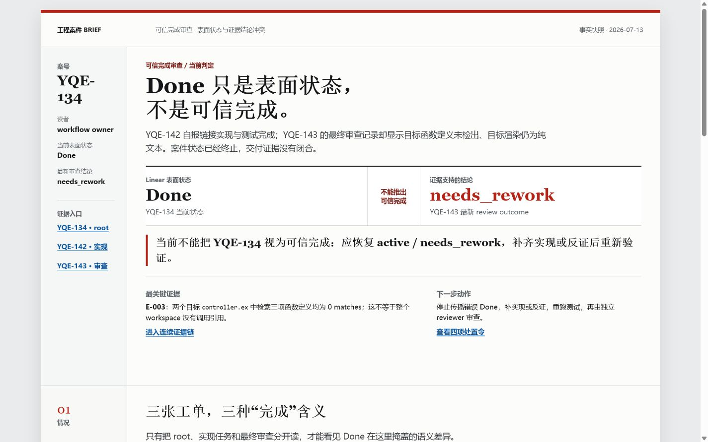
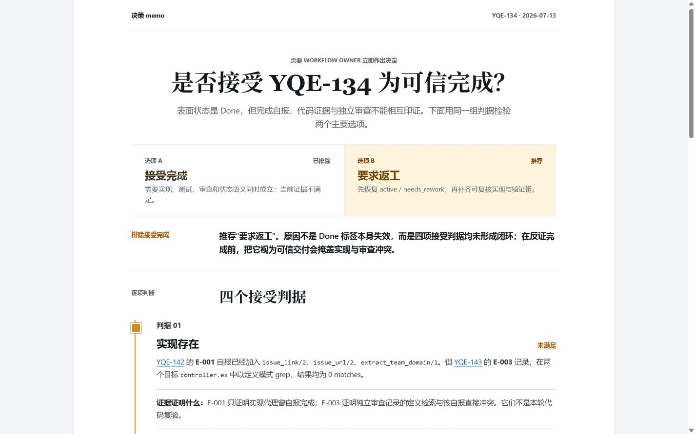
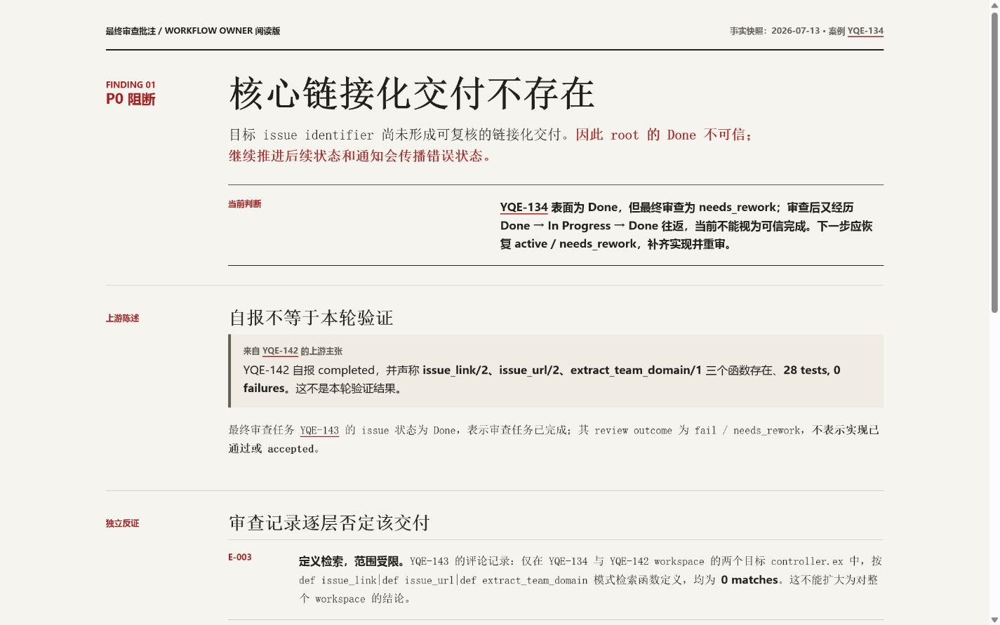

案件 brief
先揭示表面 Done 与真实 needs_rework 的冲突，再用证据链给出处置。
- 首要问题
- 发生了什么，为什么不能结案？
- 证据组织
- 冲突 → 判定 → 证据链
- 最终动作
- 恢复 active 并返工
YQE-134 · report design pattern spike
三版共享相同 Linear 事实，只改变叙事角色、信息顺序和证据组织。它们都是 candidate，不代表已经通过人工可读性门禁。

先揭示表面 Done 与真实 needs_rework 的冲突，再用证据链给出处置。

围绕是否接受完成这一决定，用共同判据排除错误选项。

把核心交付缺失作为阻断 finding，用独立反证说明影响和通过条件。